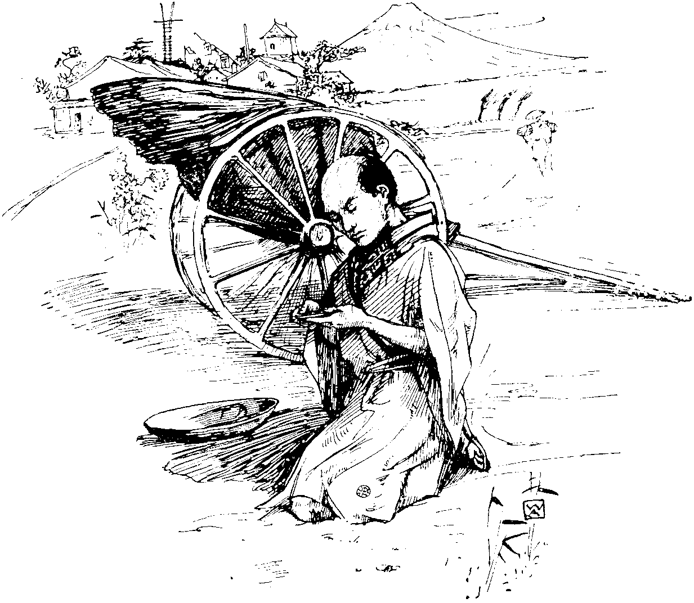
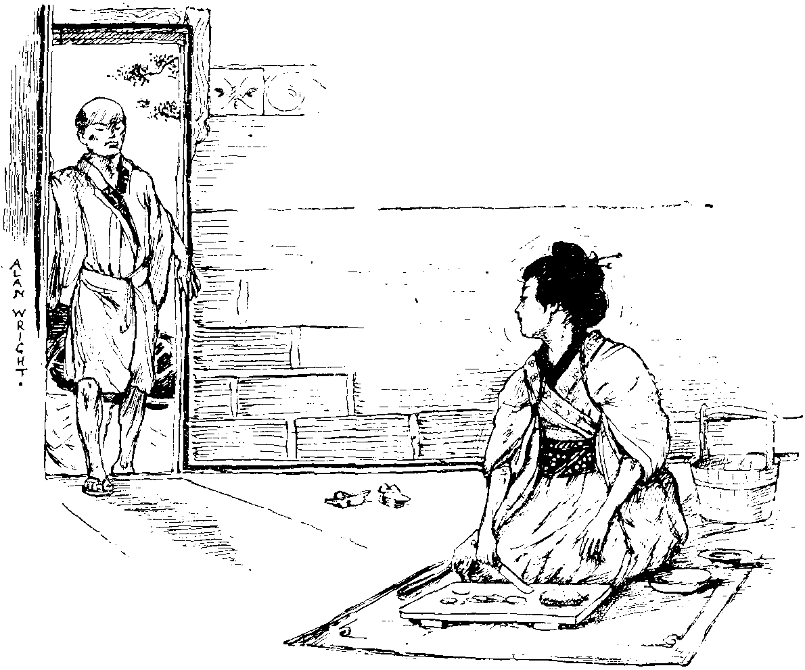
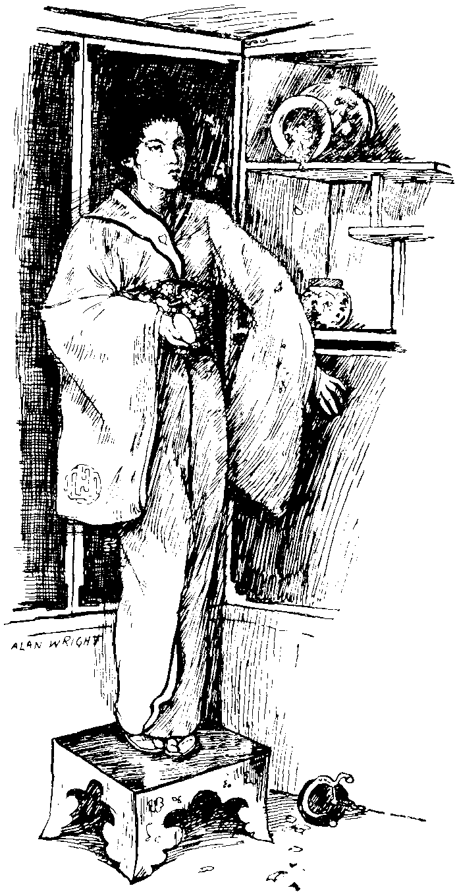

The Mirror.
By George Japy.
{kind=link}
It has always been said that the Japanese are the French of the Orient. Be that as it may, it is very clear that in certain traits which characterize the French, there is no resemblance whatever between the people of those two nations.
Almost as soon as a French baby (a girl, be it understood) is born, its first instinct is to stretch out its tiny hands for a mirror, in which to admire its beautiful little face and its graceful movements. This natural, and we may say inborn, taste grows with the child's growth, and ere the fair girl has reached her seventeenth year, her ideal of perfect bliss is to find herself in a room with mirrors on every side. There is indeed a room in the Palace of Versailles which is the elysium of the Frenchwoman. It is a long room with looking-glasses from ceiling to floor, and the said floor is polished so that it reflects, at any rate, the shadow of the feet.
Now, in the little Japanese village of Yowcuski a looking-glass was an unheard-of thing, and girls did not even know what they looked like, except on hearing the description which their lovers gave them of their personal beauty (which description, by-the-bye, was sometimes slightly biased, according as the lover was more or less devoted).

"HE PICKED UP ONE DAY IN THE STREET A SMALL POCKET
HAND-MIRROR."
{kind=link}
Now it happened that a young Japanese, whose daily work was to pull along those light carriages such as were seen at the last Paris Exhibition, picked up one day in the street a small pocket hand-mirror, probably dropped by some English lady-tourist on her travels in that part of the world.
It was, of course, the first time in his life that Kiki-Tsum had ever gazed on such a thing. He looked carefully at it, and to his intense astonishment saw the image of a brown face, with dark, intelligent eyes, and a look of awestruck wonderment expressed on its features.
Kiki-Tsum dropped on his knees, and gazing earnestly at the object he held in his hand, he whispered, "It is my sainted father. How could his portrait have come here? Is it, perhaps, a warning of some kind for me?"
He carefully folded the precious treasure up in his handkerchief, and put it in the large pocket of his loose blouse. When he went home that night he hid it away carefully in a vase which was scarcely ever touched, as he did not know of any safer place in which to deposit it. He said nothing of the adventure to his young wife, for, as he said to himself "Women are curious, and then, too, sometimes they are given to talking," and Kiki-Tsum felt that it was too reverent a matter to be discussed by neighbours, this finding of his dead father's portrait in the street.
For some days Kiki-Tsum was in a great state of excitement. He was thinking of the portrait all the time, and at intervals he would leave his work and suddenly appear at home to take a furtive look at his treasure.

"ALWAYS WITH THE SAME SOLEMN EXPRESSION."
{kind=link}
Now, in Japan, as in other countries, mysterious actions and irregular proceedings of all kinds have to be explained to a wife. Lili-Tsee did not understand why her husband kept appearing at all hours of the day. Certainly he kissed her every time he came in like this. At first she was satisfied with his explanation when he told her that he only ran in for a minute to see her pretty face. She thought it was really quite natural on his part, but when day after day he appeared, and always with the same solemn expression on his face, she began to wonder in her heart of hearts whether he was telling her the whole truth. And so Lili-Tsee fell to watching her husband's movements, and she noticed that he never went away until he had been alone in the little room at the back of the house.

"WHAT WAS IT SHE SAW?"
{kind=link}
Now the Japanese women are as persevering as any others when there is a mystery to be discovered, and so Lili-Tsee set herself to discover this mystery. She hunted day after day to see if she could find some trace of anything in that little room which was at all unusual, but she found nothing. One day, however, she happened to come in suddenly and saw her husband replacing the long blue vase in which she kept her rose leaves in order to dry them. He made some excuse about its not looking very steady, and appeared to be just setting it right, and Lili-Tsee pretended there was nothing out of the common in his putting the vase straight. The moment he had gone out of the house, though, she was up on a stool like lightning, and in a moment she had fished the looking-glass out of the vase. She took it carefully in her hand, wondering whatever it could be, but when she looked in it the terrible truth was clear. What was it she saw?
Why, the portrait of a woman, and she had believed that Kiki-Tsum was so good, and so fond, and so true.
Her grief was at first too deep for any words. She just sat down on the floor with the terrible portrait in her lap, and rocked herself backwards and forwards. This, then, was why her husband came home so many times in the day. It was to look at the portrait of the woman she had just seen.
Suddenly a fit of anger seized her, and she gazed at the glass again. The same face looked at her, but she wondered how her husband could admire such a face, so wicked did the dark eyes look: there was an expression in them that she certainly had not seen the first time she had looked at it, and it terrified her so much that she made up her mind not to look at it again.
She had no heart, however, for anything, and did not even make any attempt to prepare a meal for her husband. She just went on sitting there on the floor, nursing the portrait, and at the same time her wrath. When later on Kiki-Tsum arrived, he was surprised to find nothing ready for their evening meal, and no wife. He walked through to the other rooms, and was not long left in ignorance of the cause of the unusual state of things.
"So this is the love you professed for me! This is the way in which you treat me, before we have even been married a year!"
"What do you mean, Lili-Tsee?" asked her husband, in consternation, thinking that his poor wife had taken leave of her senses.
"What do I mean? What do you mean? I should think. The idea of your keeping portraits in my rose-leaf vase. Here, take it and treasure it, for I do not want it, the wicked, wicked woman!" and here poor Lili-Tsee burst out crying.
"I cannot understand," said her bewildered husband.
"Oh, you can't?" she said, laughing hysterically. "I can, though, well enough. You like that hideous, villainous-looking woman better than your own true wife. I would say nothing if she were at any rate beautiful; but she has a vile face, a hideous face, and looks wicked and murderous, and everything that is bad!"
"Lili-Tsee, what do you mean?" asked her husband, getting exasperated in his turn. "That portrait is the living image of my poor dead father. I found it in the street the other day, and put it in your vase for safety."
Lili-Tsee's eyes flashed with indignation at this apparently barefaced lie.
"Hear him!" she almost screamed. "He wants to tell me now that I do not know a woman's face from a man's."
Kiki-Tsum was wild with indignation, and a quarrel began in good earnest. The street-door was a little way open, and the loud, angry words attracted the notice of a bonze (one of the Japanese priests) who happened to be passing.
"My children," he said, putting his head in at the door, "why this unseemly anger, why this dispute?"
"Father," said Kiki-Tsum, "my wife is mad."
"All women are so, my son, more or less," interrupted the holy bonze. "You were wrong to expect perfection, and must abide by your bargain now. It is no use getting angry, all wives are trials."
"But what she says is a lie."
"It is not, father," exclaimed Lili-Tsee. "My husband has the portrait of a woman, and I found it hidden in my rose-leaf vase."
"I swear that I have no portrait but that of my poor dead father," explained the aggrieved husband.
"My children, my children," said the holy bonze, majestically, "show me the portraits."
"Here it is; there is only one, but it is one too many," said Lili-Tsee, sarcastically.
The bonze took the glass and looked at it earnestly. He then bowed low before it, and in an altered tone said: "My children, settle your quarrel and live peaceably together. You are both in the wrong. This portrait is that of a saintly and venerable bonze. I know not how you could mistake so holy a face. I must take it from you and place it amongst the precious relics of our church."
So saying, the bonze lifted his hands to bless the husband and wife, and then went slowly away, carrying with him the glass which had wrought such mischief.
{kind=link}